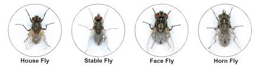

Quick Reference
| Fly Type | What to Look For | Best Control |
|---|---|---|
| Horn Flies | Small (3–5mm), gather on the back and sides, bite and feed on blood | Ear tags, pour-ons, back rubbers/dust bags |
| Face Flies | Dark gray, 6–8mm, non-biting but spread pinkeye, gather near eyes, nose, and wounds | Pyrethroid ear tags, pour-ons, back rubbers/dust bags |
| Stable Flies | Gray checkerboard pattern, 7–8mm, bite and feed on blood, gather on legs, active mid-May–September | Sanitation, premise spraying |
Horn Flies
What to look for: Small flies (3–5mm) that gather on the back and sides of cattle and bite and feed on blood.
Control:
- Ear tags — remove in the fall to help prevent resistance
- Pour-ons like ivermectin — protect for about 28 days, so reapply as needed
- Back rubbers and dust bags — let cattle treat themselves, no handling required
- Oral larvicides in feed or mineral — stop new larvae but don’t kill adult flies
Face Flies
What to look for: Dark gray flies (6–8mm) that don’t bite but spread pinkeye. They gather around the eyes, nose, and wounds.
Control:
- Pyrethroid ear tags
- Pour-ons
- Back rubbers and dust bags — let cattle treat themselves, no handling required
Stable Flies
What to look for: Gray flies with a checkerboard pattern (7–8mm) that bite and feed on blood, usually on the legs. Most common mid-May through September.
Control:
- Sanitation — remove manure piles and other larvae breeding sites (most effective option)
- Premise spraying — flies rest in shaded areas, so treating those spots can help
Recommended Products
Cyonara
Type: Pour-on
FliesTicks
Applied along the topline, Cyonara is our recommended pour-on for fly and tick control.
Corathon
Type: Spray
FliesTicks
Can be sprayed directly on ears and sores for targeted fly and tick control.
Permethrin 10%
Type: Fogger
FliesTicks
Used in a fogger for premise treatment to help knock down adult fly and tick populations.